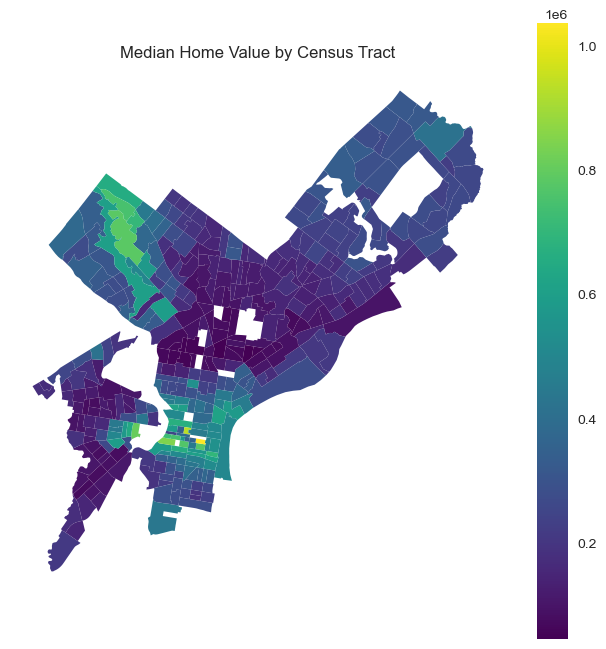
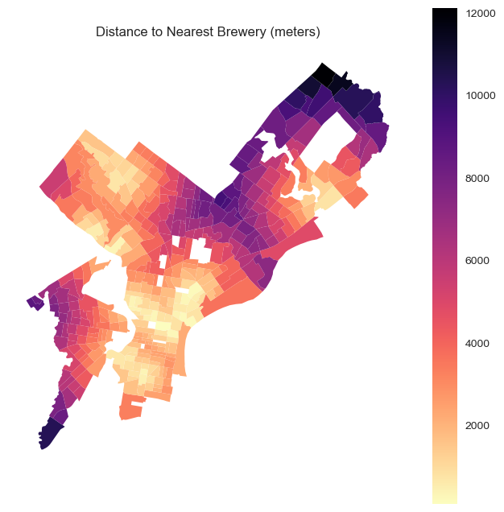
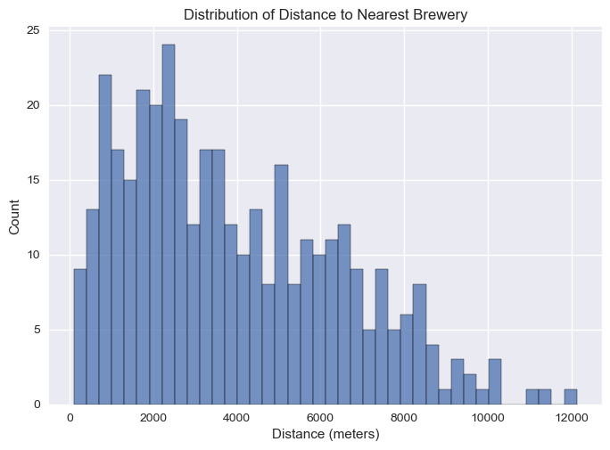
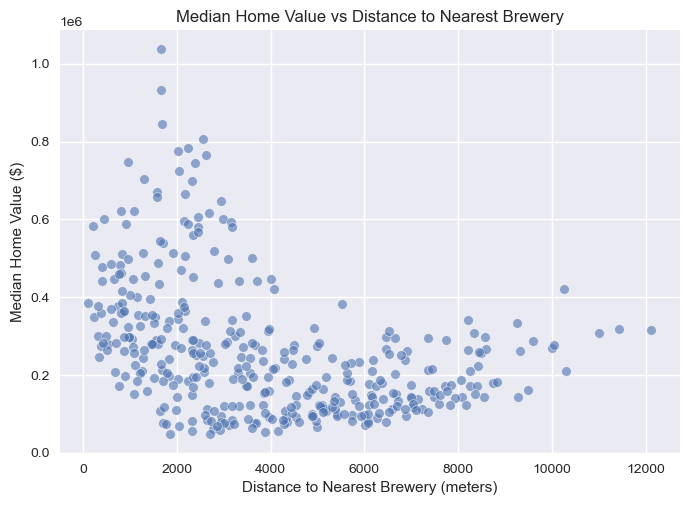
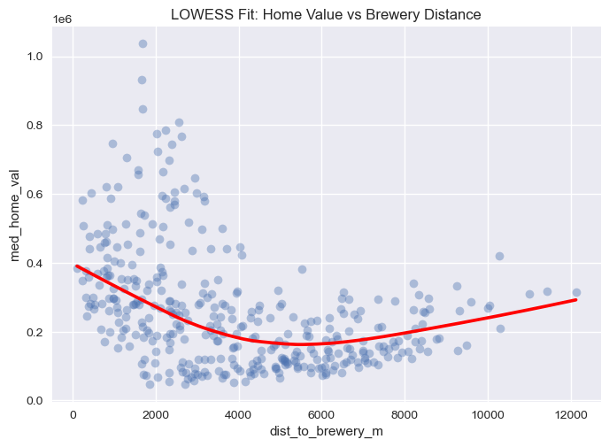
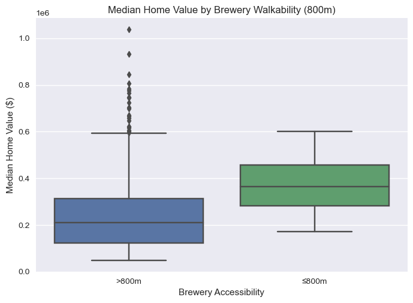
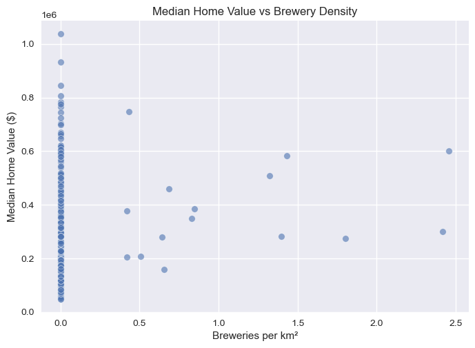

import pandas as pd
import geopandas as gpd
import matplotlib.pyplot as plt
import seaborn as sns
os.makedirs("../assets/figures", exist_ok=True)
plt.style.use("seaborn-v0_8")03 — Exploratory Analysis & Visualization
This notebook explores spatial patterns in brewery accessibility and median home values across Philadelphia census tracts. Using the cleaned, tract-level dataset created in Notebook 2, we examine geographic variation, bivariate relationships, and accessibility threshold effects.
gdf = gpd.read_file("../data/processed/philly_tracts_final.geojson")gdf.columns
gdf.shape(376, 22)Median home values choropleth
fig, ax = plt.subplots(1, 1, figsize=(8, 8))
gdf.plot(
column="med_home_val",
cmap="viridis",
linewidth=0,
legend=True,
ax=ax
)
ax.set_title("Median Home Value by Census Tract")
ax.axis("off")
plt.savefig(
"../assets/figures/map_med_home_val.png",
dpi=200,
bbox_inches="tight"
)
plt.show()
Distance to nearest brewery
fig, ax = plt.subplots(1, 1, figsize=(8, 8))
gdf.plot(
column="dist_to_brewery_m",
cmap="magma_r",
linewidth=0,
legend=True,
ax=ax
)
ax.set_title("Distance to Nearest Brewery (meters)")
ax.axis("off")
plt.savefig(
"../assets/figures/map_dist_to_brewery.png",
dpi=200,
bbox_inches="tight"
)
plt.show()

Non Spatial EDA (Distributions)
sns.histplot(gdf["med_home_val"], bins=40)
plt.title("Distribution of Median Home Values")
plt.xlabel("Median Home Value ($)")
plt.savefig(
"../docs/assets/figures/hist_med_home_val.png",
dpi=200,
bbox_inches="tight"
)
plt.show()

sns.histplot(gdf["dist_to_brewery_m"], bins=40)
plt.title("Distribution of Distance to Nearest Brewery")
plt.xlabel("Distance (meters)")
plt.savefig(
"../docs/assets/figures/hist_dist_to_brewery.png",
dpi=200,
bbox_inches="tight"
)
plt.show()

Bivariate Relationships
sns.scatterplot(
data=gdf,
x="dist_to_brewery_m",
y="med_home_val",
alpha=0.6
)
plt.title("Median Home Value vs Distance to Nearest Brewery")
plt.xlabel("Distance to Nearest Brewery (meters)")
plt.ylabel("Median Home Value ($)")
plt.savefig(
"../assets/figures/scatter_home_vs_dist.png",
dpi=200,
bbox_inches="tight"
)
plt.show()

sns.regplot(
data=gdf,
x="dist_to_brewery_m",
y="med_home_val",
scatter_kws={"alpha": 0.4},
line_kws={"color": "red"},
lowess=True
)
plt.title("LOWESS Fit: Home Value vs Brewery Distance")
plt.savefig(
"../docs/assets/figures/lowess_home_vs_dist.png",
dpi=200,
bbox_inches="tight"
)
plt.show()

Threshhold analysis
gdf["walkable_800m"] = gdf["brewery_within_800m"].map({1: "≤800m", 0: ">800m"})gdf["walkable_800m"] = gdf["brewery_within_800m"].map({1: "≤800m", 0: ">800m"})
sns.boxplot(
data=gdf,
x="walkable_800m",
y="med_home_val"
)
plt.title("Median Home Value by Brewery Walkability (800m)")
plt.xlabel("Brewery Accessibility")
plt.ylabel("Median Home Value ($)")
plt.savefig(
"../assets/figures/box_home_by_800m.png",
dpi=200,
bbox_inches="tight"
)
plt.show()

Brewery intensity effects
sns.scatterplot(
data=gdf,
x="brewery_density",
y="med_home_val",
alpha=0.6
)
plt.title("Median Home Value vs Brewery Density")
plt.xlabel("Breweries per km²")
plt.ylabel("Median Home Value ($)")
plt.savefig(
"../docs/assets/figures/scatter_home_vs_density.png",
dpi=200,
bbox_inches="tight"
)
plt.show()
## Interactive Map: Breweries and Nearby Home Valuesimport folium
import numpy as np
# Load processed tracts
gdf = gpd.read_file("../data/processed/philly_tracts_final.geojson")
# Load breweries
gdf_brew = gpd.read_file("../data/raw/breweries_philly.geojson")
gdf_brew = gdf_brew.dropna(subset=["geometry"])
gdf_brew = gdf_brew[gdf_brew["brewery_type"].isin(["micro", "brewpub", "regional"])]
# Ensure CRS
gdf = gdf.to_crs(4326)
gdf_brew = gdf_brew.to_crs(4326)# Project to meters for buffering
tracts_m = gdf.to_crs(3857).copy()
brews_m = gdf_brew.to_crs(3857).copy()
# Use tract centroids for walkability
tracts_m["centroid"] = tracts_m.geometry.centroid
R = 800 # walkable radius in meters
brew_stats = []
for idx, brew in brews_m.iterrows():
buf = brew.geometry.buffer(R)
nearby = tracts_m[tracts_m["centroid"].within(buf)]
brew_stats.append({
"brew_index": idx,
"n_tracts_800m": len(nearby),
"median_home_800m": nearby["med_home_val"].median(),
"mean_home_800m": nearby["med_home_val"].mean(),
})
brew_stats = (
gpd.GeoDataFrame(brew_stats)
.set_index("brew_index")
)
gdf_brew = gdf_brew.join(brew_stats)# Initialize map
m = folium.Map(
location=[39.9526, -75.1652],
zoom_start=12,
tiles="CartoDB positron"
)
# Add tract-level choropleth (median home value)
folium.Choropleth(
geo_data=gdf,
data=gdf,
columns=["GEOID", "med_home_val"],
key_on="feature.properties.GEOID",
fill_color="YlGnBu",
fill_opacity=0.6,
line_opacity=0.1,
nan_fill_color="lightgray",
legend_name="Median Home Value ($)"
).add_to(m)<folium.features.Choropleth at 0x25319fcbb50>for _, row in gdf_brew.iterrows():
lat, lon = row.geometry.y, row.geometry.x
popup_html = f"""
<b>{row.get('name','Brewery')}</b><br>
Type: {row.get('brewery_type','')}<br><br>
<b>Within 800m</b><br>
Tracts: {int(row.get('n_tracts_800m',0))}<br>
Median home value: ${row.get('median_home_800m',np.nan):,.0f}<br>
Mean home value: ${row.get('mean_home_800m',np.nan):,.0f}
"""
folium.CircleMarker(
location=[lat, lon],
radius=5,
fill=True,
fill_opacity=0.85,
color="#8c2d04",
tooltip=row.get("name","Brewery"),
popup=folium.Popup(popup_html, max_width=300)
).add_to(m)m
m.save("brewery_home_value_interactive.html")gdf[["med_home_val", "dist_to_brewery_m", "brewery_density", "brewery_count"]].corr()| med_home_val | dist_to_brewery_m | brewery_density | brewery_count | |
|---|---|---|---|---|
| med_home_val | 1.000000 | -0.392675 | 0.137110 | 0.143154 |
| dist_to_brewery_m | -0.392675 | 1.000000 | -0.234798 | -0.259107 |
| brewery_density | 0.137110 | -0.234798 | 1.000000 | 0.885110 |
| brewery_count | 0.143154 | -0.259107 | 0.885110 | 1.000000 |
import statsmodels.api as sm
df = gdf.dropna(subset=["med_home_val", "dist_to_brewery_m"])
X = sm.add_constant(df["dist_to_brewery_m"])
y = df["med_home_val"]
model = sm.OLS(y, X).fit()
model.rsquared0.15419401468718752gdf.columnsIndex(['STATEFP', 'COUNTYFP', 'TRACTCE', 'GEOID', 'NAME', 'NAMELSAD', 'MTFCC',
'FUNCSTAT', 'ALAND', 'AWATER', 'INTPTLAT', 'INTPTLON', 'med_home_val',
'brewery_count', 'area_km2', 'brewery_density', 'dist_to_brewery_m',
'dist_to_brewery_km', 'dist_to_brewery_min', 'brewery_within_800m',
'brewery_within_1200m', 'geometry'],
dtype='object')